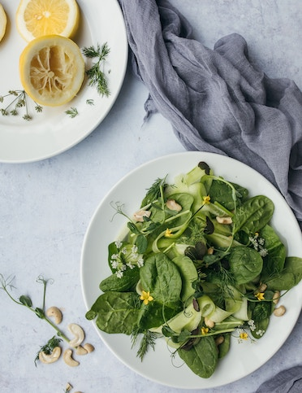

Easy green salad recipe

Green Salad with dressing
prep time: 15 minutes serves: 8
Ingredients:
- 2 lettuces, chopped
- 2 avocados, chopped
- 1 and 1/2 cucmbers, sliced
- 2 green peppers, sliced and deseeded
- 2 celery sticks, sliced
- bunch of spring onions sliced
Dressing:
- juice 2 lemons
- 4 tbsp olive oil
- 1tbsp white wine vinegar
- 2 garlic cloves
- 1 green chilli
- handful of parsley leaves
- handful of coriander leaves
Method:
Step 1 - Using a stick blender or the small bowl of a food processor, whizz together all the dressing ingredients. Season to taste.
Step 2 - To serve, put all the salad ingredients in a large bowl, drizzle with the dressing and toss together.